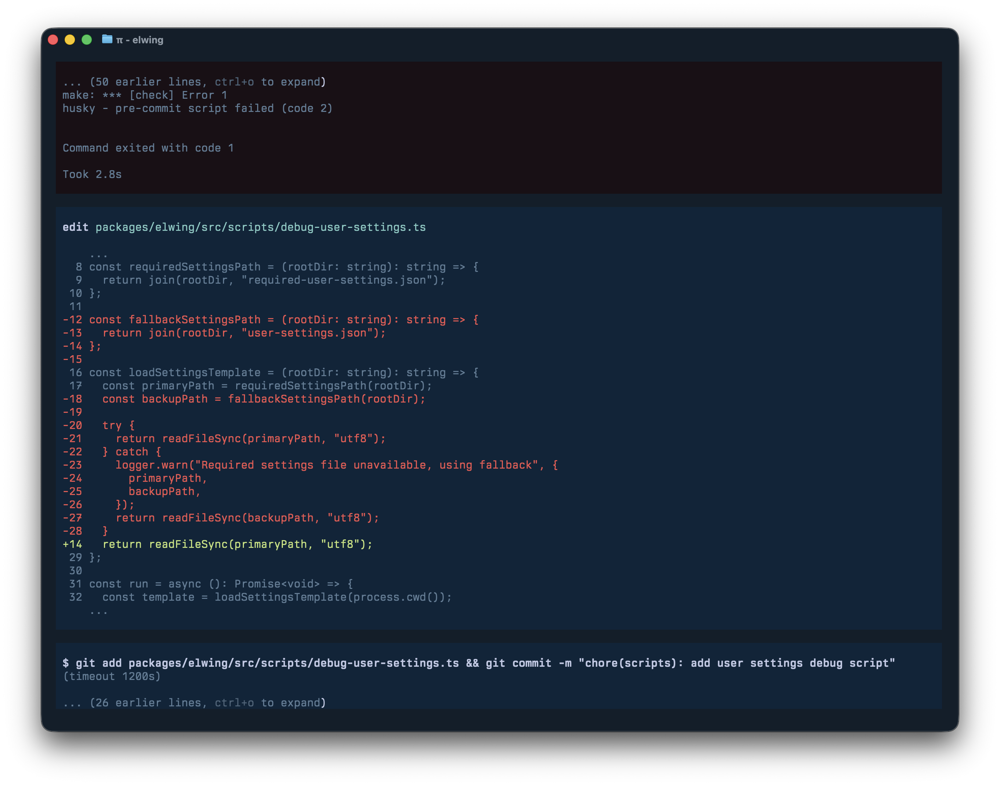
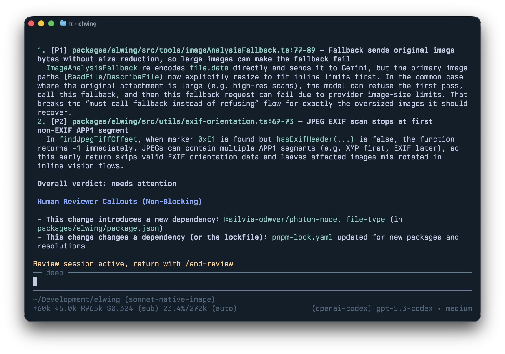

Armin Ronacher & Cristina Poncela
Earendil Inc.
AI Engineer · June 2026 · London
The Friction Is Your Judgment
Armin Ronacher & Cristina Poncela · Earendil
Who We Are
Armin Ronacher
- Creator of Flask
- Founder at Earendil
- 10 years at Sentry
Cristina Poncela
- AI Engineer at Earendil
- Previously at Bending Spoons
From Practice, Not Theory
- We have been building with agents for over 12 months
- We had moments of huge leverage and moments of real mess
- Two distinct classes of problems keep recurring and they need different solutions
- Take this as part of a learning journey, not a finished playbook
Two Problems
The Psychology Problem
- How do you work with your own brain so you don't abdicate to the machine?
The Engineering Problem
- How do you structure a codebase so agents can actually be productive on it?
Part I
The Psychology Problem
The Shift
- Early on, agentic coding felt like a secret unlock: you got more done, had breathing room
- Then it went mainstream and the expectation shifted
- Instead of reclaiming time, everyone is under pressure to ship faster
- The tools didn't buy us slack but they raised the baseline expectation
The Trap
Agents produce output fast, and output feels like progress. So you stop questioning, stop designing, stop saying "wait."
- Your brain rewards you for velocity: shipping feels good
- You get speed early, then quality drift later
- The agent doesn't know when to stop … and neither do you, once you're in the flow
The Amplification Problem
- Before agents: engineers balanced creating and reviewing code
- Now every engineer has an agent amplifying their output
- But responsibility still rests on the human and it hasn't been amplified
- You are outnumbered by entities that cannot carry responsibility
- Code reviews are increasingly skipped or rubber-stamped
The moments where you want to skip thinking
are exactly the moments where thinking matters most.
Part II
The Engineering Problem
Why Agent Code Drifts
- Agents are optimized to produce code that runs
- They over-protect locally: catching exceptions broadly, falling back to defaults
- This is the opposite of good design: failures should propagate up, not be swallowed
- A service silently running with wrong config is worse than a service that refuses to start
- Multiply across a codebase and failure modes become invisible
Messier codebase → worse agent recall → more duplication → more mess
Entropy is self-reinforcing.
Libraries vs. Products
Where agents excel
- Clearly defined problem
- Compact API surface
- Tight constraints
- A legible, stable core to plug into
Where agents struggle
- Interacting concerns: flags, permissions, billing
- No single file owns a feature
- Context window can't hold the full picture
- Locally reasonable, globally incoherent
Your codebase is infrastructure for the agent.
Design it that way.
An Agent-Legible Codebase
- Modularization with clear boundaries: agents work in one area without corrupting another
- Known patterns and conventions: agents pattern-match; give them patterns worth matching
- Simple core, complexity pushed to layers above
- No hidden magic: if the agent can't see it, it can't respect it
Example Mechanical Enforcement
- No bare catch-alls: forces the agent to think about error handling
- No raw SQL outside the abstraction layer: preserves the query interface
- No raw input boxes in the UI: forces use of the component library
- No dynamic imports
- Unique function names enforced: nudges toward discovery over duplication
- erasableSyntaxOnly TypeScript mode

Pull Request Review
Immediately actionable → Agent
- Style violations
- Mechanical bugs
- Clear engineering rule breaks
Call-outs → Human
- Database migrations added
- New dependencies introduced
- Auth / permissions changes
- Backwards-incompatible API changes
- Irreversible destructive operations

Where Speed Actually Helps
High leverage
- Exploring product directions
- Shipping prototypes and onboarding experiments quickly
- Debugging concrete failures
- Fixing CI and regressions
- Creating reproduction cases
- Reducing time to first draft
Lower leverage
- Reliability, consistency, and shared understanding
- Long-lived systems with many interacting states
- Code you have not specified clearly yourself
- Anything where cleanup cost arrives later
You Still Have to Go Slow
- Refactoring later only works if you planned for it and did not make too much mess too early
- Once your understanding drops, cleanup gets harder too
- With agents, you can accumulate in days the debt that used to take months
- That makes it much harder to judge the actual state of the codebase
Why Friction Matters
- Friction makes you feel the pressure — and the agent cannot feel that pressure for you
- That feeling is part of how you understand the cost of writing, changing, and owning the code
- Some friction should be removed; some friction should be increased
- Increase the friction around taste and decision-making so the developer is pulled back into the loop
Some friction is waste.
Without friction, you can't steer.
The friction isn't the enemy.
The friction is your judgment.